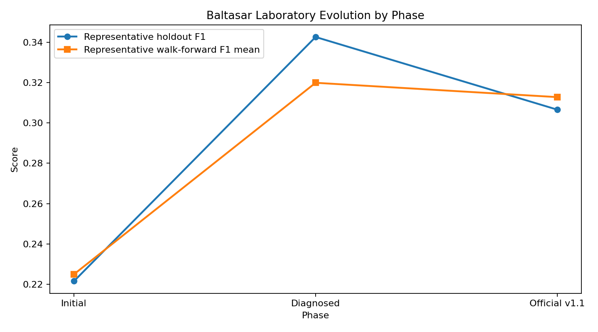
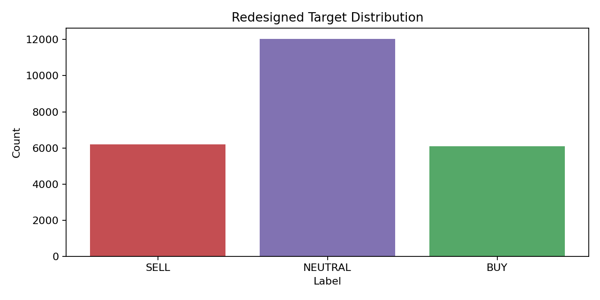
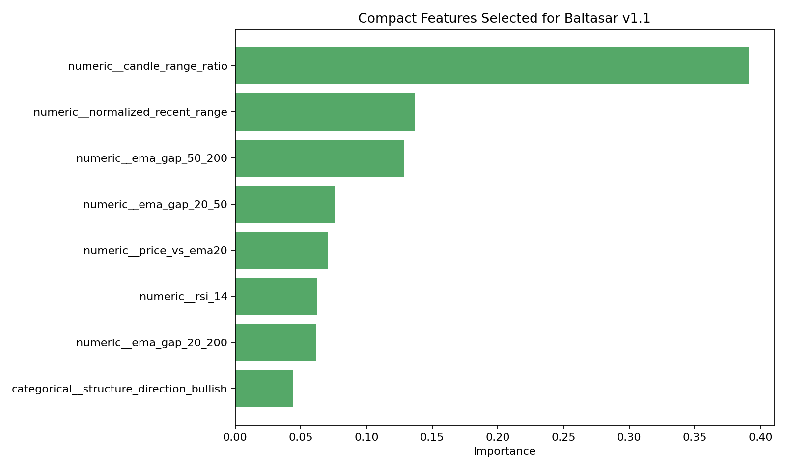
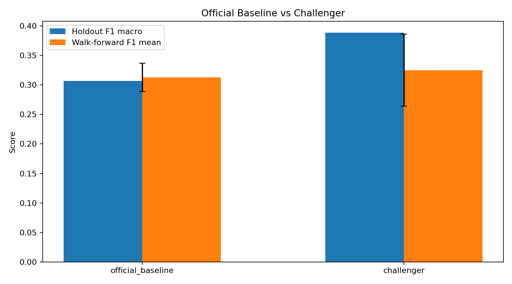
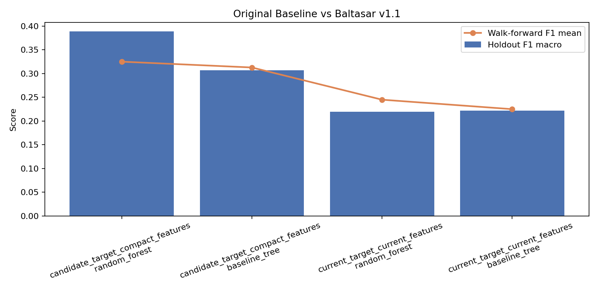
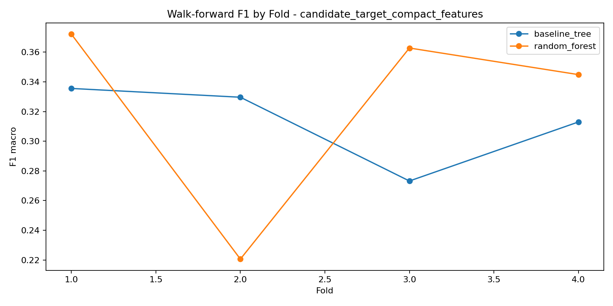
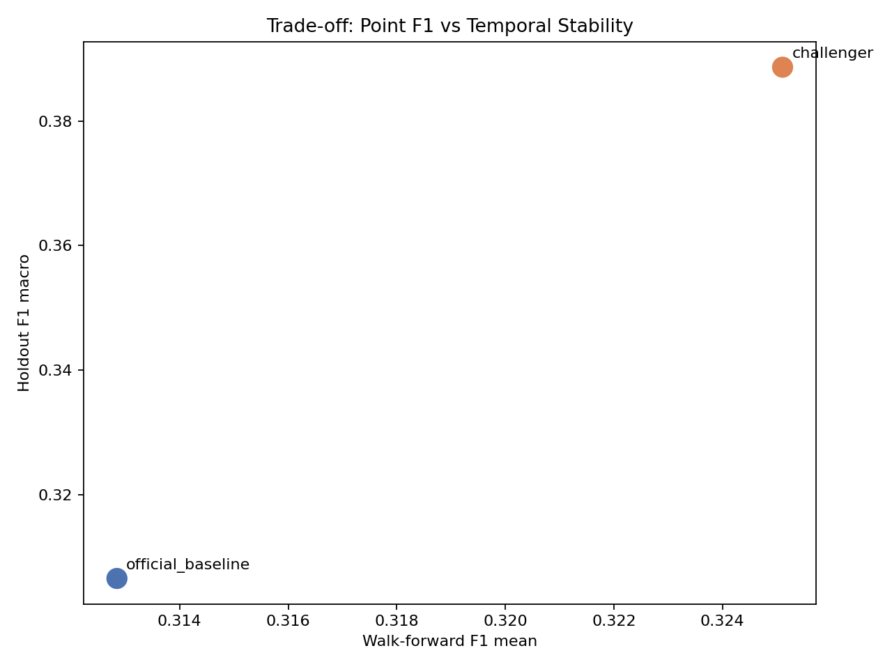

Baltasar v1.1 Executive Report
Executive Summary
Baltasar v1.1 ya esta consolidado como baseline oficial del laboratorio de clasificacion de direccion de mercado dentro de MAGI. La configuracion oficial usa target `h18_t05`, features `compact`, `baseline_tree` como baseline y `random_forest` como challenger.
La recomendacion ejecutiva es adoptar Baltasar v1.1 como referencia operativa de laboratorio para Prosperity, porque mejora de forma material la estabilidad y la trazabilidad respecto a la version inicial, aun cuando no maximiza la mejor metrica puntual observada.

Que construyo Codex
- un laboratorio reproducible de entrenamiento, diagnostico y consolidacion para Baltasar
- validacion de dataset, dashboards, notebooks y artefactos exportables
- una ruta de decision por fases: corrida inicial, diagnostico, rediseno y consolidacion oficial
- una base oficial v1.1 y un challenger documentado
Cual era el problema inicial
El laboratorio arranco con una version honesta pero debil:
- target muy dominado por `NEUTRAL`
- bajo `F1 macro`
- alta sensibilidad al horizonte y threshold del target
- inestabilidad real entre tramos temporales
- redundancia alta en snapshots de precio
Que se diagnostico
La conclusion del diagnostico fue clara:
- el problema principal no era solo el modelo; era la definicion del target y la estructura del set de features
- el target original `h12_t08` estaba demasiado cargado hacia `NEUTRAL`
- varias features aportaban poco o duplicaban informacion
- la estabilidad temporal debia pesar mas que una sola corrida holdout
Como cambio el target
Se rediseno el target oficial a `h18_t05`:
- horizonte futuro: `18`
- threshold: `0.0005`
Esto mejoro el balance de clases y la calidad de senal para entrenamiento. La distribucion objetivo redisenada queda aproximadamente:
- {'SELL': 6193, 'NEUTRAL': 12038, 'BUY': 6096}

Como se simplificaron las features
Se reemplazo un set cargado de snapshots absolutos por una variante `compact` basada en relaciones mas explicativas:
- rangos normalizados
- gaps entre EMAs
- precio relativo frente a EMAs
- RSI
- direccion estructural
Features compactas mas relevantes:
- numeric__candle_range_ratio, numeric__normalized_recent_range, numeric__ema_gap_50_200, numeric__ema_gap_20_50, numeric__price_vs_ema20, numeric__rsi_14, numeric__ema_gap_20_200, categorical__structure_direction_bullish

Por que `baseline_tree` quedo como baseline oficial
`baseline_tree` no fue el mejor modelo puntual, pero si el mejor baseline para gobernanza del laboratorio:
- holdout `F1 macro`: 0.3066
- walk-forward `F1 mean`: 0.3128
- walk-forward `F1 std`: 0.0243
- numero de features: 16
La dispersion temporal fue claramente menor que la del challenger. Para Prosperity, esto significa una base mas interpretable, mas estable y mas facil de monitorear.
Por que `random_forest` quedo como challenger
`random_forest` compacto quedo documentado como challenger porque:
- logra mejor `F1 macro` puntual: 0.3886
- logra mejor `walk-forward F1 mean`: 0.3251
- pero su variabilidad temporal es bastante mayor: 0.0611
En terminos ejecutivos: hoy parece mas fuerte en una foto, pero menos confiable como referencia oficial del laboratorio.

Que metricas importan
Para esta etapa importan principalmente:
- `F1 macro`: porque evita premiar solo la clase dominante
- `accuracy`: como referencia general, pero no como criterio principal
- metricas por clase: para entender si el sistema realmente distingue `BUY`, `SELL` y `NEUTRAL`
- `walk_forward_f1_mean`: porque mide robustez entre tramos temporales
- `walk_forward_f1_std`: porque mide estabilidad
Que significa el trade-off entre F1 puntual y estabilidad temporal
El laboratorio eligio una configuracion que no persigue solo el mejor numero puntual, sino la mejor combinacion entre rendimiento, estabilidad y explicabilidad.
Eso significa aceptar un `F1` puntual menor si a cambio obtenemos:
- menor dispersion entre tramos
- mayor trazabilidad del comportamiento
- mejor capacidad de explicar por que el baseline fue elegido



Que puede hacer Baltasar hoy
- clasificar direccion de mercado en tres clases con una base reproducible y monitoreable
- servir como baseline serio para comparaciones futuras
- mostrar una estructura clara de gobierno entre baseline oficial y challenger
- sostener una narrativa tecnica defendible frente a decisiones futuras
Que no puede hacer todavia
- no esta listo para produccion operativa sin mas fases
- no garantiza robustez suficiente para todos los regimenes de mercado
- no incorpora calibracion, costos de clase ni tuning fino
- no reemplaza todavia una logica de negocio completa de trading
Recomendacion ejecutiva para Prosperity
Adoptar Baltasar v1.1 como baseline oficial del laboratorio y usarlo como referencia de control para las siguientes fases. Mantener `random_forest` compacto como challenger formal, pero no promoverlo todavia mientras su estabilidad temporal siga siendo sensiblemente peor.
Decision sugerida para Prosperity
1. Aprobar Baltasar v1.1 como baseline oficial del laboratorio MAGI.
2. Usar esta base para toda comunicacion interna, demos y seguimiento tecnico inmediato.
3. Mantener el challenger activo solo como comparador, no como baseline oficial.
4. Autorizar una futura fase enfocada en calibracion, robustez temporal y reglas de promocion del challenger antes de cualquier salto a uso operativo mas exigente.